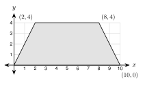

8.4 - Volume of Prisms and Cylinders
A truck pulls up to a house. It brings concrete for a new patio. The driver asks one question: “How many cubic yards do you need?” If the order is too small, the patio is not finished. If it is too big, money is wasted.
The answer is a volume. In this lesson you find the volume of prisms and cylinders. You also change units, so you can order concrete in cubic yards or fill a pool with gallons of water.
Printable Guided Notes for this lesson (fill-in notes to print and write on)
🔥 Warm Up
Find the area of a circle with radius \(3\). Give the exact answer.
Find the area of a trapezoid with parallel sides \(6\) and \(10\) and height \(4\).
Solve \(x^2 + 5x - 14 = 0\).
👥 Learn Together
8.4.1 - Volume of a Prism
Volume is the amount of space inside a solid. We count cubic units. One cubic unit is a cube with edges of \(1\) unit.
This box is \(4\) units long, \(3\) units wide, and \(2\) units tall. Each layer has \(4 \cdot 3 = 12\) cubes. There are \(2\) layers. So the box holds \(12 \cdot 2 = 24\) cubes.
The \(12\) is the area of the base. The \(2\) is the height. This works for every prism, not only boxes.
\(V = Bh\), where \(B\) is the area of the base and \(h\) is the height of the prism.
Example 1: A box
Find the volume of a box that is \(6\) ft long, \(4\) ft wide, and \(3\) ft tall.
\(B = 6 \cdot 4 = 24\) square feet.
\[ V = Bh = 24 \cdot 3 = 72 \text{ cubic feet} \]
\(B = 7 \cdot 5 = 35\). \(V = 35 \cdot 2 = 70\) cubic meters.
Example 2: A triangular prism

The base is a right triangle with legs \(6\) in and \(4\) in. The prism is \(9\) in long. Find the volume.
The base is the triangle. \(B = \frac{1}{2}(6)(4) = 12\) square inches. The height of the prism is the length, \(9\) in.
\[ V = Bh = 12 \cdot 9 = 108 \text{ cubic inches} \]
\(B = \frac{1}{2}(5)(12) = 30\). \(V = 30 \cdot 6 = 180\) cubic feet.
Example 3: A base on the coordinate plane

The base of a prism is the trapezoid with vertices \((0, 0)\), \((10, 0)\), \((8, 4)\), and \((2, 4)\). Each unit is \(1\) foot. The prism is \(6\) ft tall. Find the volume.
The parallel sides are horizontal. The bottom is \(10 - 0 = 10\) ft. The top is \(8 - 2 = 6\) ft. The height of the trapezoid is \(4\) ft.
\[ B = \tfrac{1}{2}(10 + 6)(4) = 32 \text{ square feet} \]
\[ V = Bh = 32 \cdot 6 = 192 \text{ cubic feet} \]
\(B = \frac{1}{2}(8)(5) = 20\). \(V = 20 \cdot 10 = 200\) cubic feet.
8.4.2 - Volume of a Cylinder
A cylinder is like a prism with a round base. The base is a circle, so \(B = \pi r^2\).
\(V = \pi r^2 h\)
Example 4: A cylinder

Find the volume of a cylinder with \(r = 3\) cm and \(h = 10\) cm. Give the exact answer and a decimal rounded to the nearest tenth.
\[ V = \pi(3)^2(10) = 90\pi \approx 282.7 \text{ cubic centimeters} \]
The radius is half the diameter, \(r = 5\). \(V = \pi(5)^2(4) = 100\pi \approx 314.2\) cubic inches.
8.4.3 - Slanted Solids (Cavalieri’s Principle)
Make a stack of coins. Push the stack so it leans. You used the same coins, so the volume is the same. The height of the stack did not change.
This idea is Cavalieri’s principle. If two solids have the same height and the same cross-section area at every level, they have the same volume. A leaning prism or cylinder is oblique.
For an oblique solid, the height is the straight-up distance between the bases, at a right angle to them. It is not the slanted side. Look for the dashed line with the square mark.
Example 5: An oblique cylinder
The base has radius \(4\) ft. The slanted side is \(13\) ft. The straight-up height is \(12\) ft. Find the volume. Give the exact answer and a decimal rounded to the nearest tenth.
The slanted side (\(13\)) is not used.
\[ V = \pi r^2 h = \pi(4)^2(12) = 192\pi \approx 603.2 \text{ cubic feet} \]
\(B = 6 \cdot 5 = 30\). \(V = 30 \cdot 9 = 270\) cubic feet. The \(12\) ft edge is not used.
8.4.4 - Changing Units
Volume units are cubes, so conversion numbers are cubed.
| Fact | Why |
|---|---|
| \(1 \text{ yd}^3 = 27 \text{ ft}^3\) | \(3 \cdot 3 \cdot 3 = 27\) |
| \(1 \text{ ft}^3 = 1728 \text{ in}^3\) | \(12 \cdot 12 \cdot 12 = 1728\) |
| \(1 \text{ ft}^3 \approx 7.48\) gallons | measured |
Change every length to the same unit before you multiply. A slab that is \(4\) inches thick is \(\frac{1}{3}\) foot thick.
Example 6: Concrete
Moses is pouring a patio. It is \(12\) ft by \(20\) ft and \(4\) in thick. How many cubic yards of concrete does he need? Round to the nearest tenth.
\(4\) in \(= \frac{1}{3}\) ft.
\[ V = 12 \cdot 20 \cdot \tfrac{1}{3} = 80 \text{ cubic feet} \]
\[ 80 \div 27 \approx 3.0 \text{ cubic yards} \]
\(V = 10 \cdot 15 \cdot \frac{1}{3} = 50\) cubic feet. \(50 \div 27 \approx 1.9\) cubic yards.
Example 7: Water in a pool
A round pool has a diameter of \(24\) ft. The water is \(4\) ft deep. How many gallons does it hold? Use \(1 \text{ ft}^3 \approx 7.48\) gallons. Round to the nearest hundred gallons.
\(r = 12\) ft.
\[ V = \pi(12)^2(4) = 576\pi \approx 1809.6 \text{ cubic feet} \]
\[ 1809.6 \cdot 7.48 \approx 13{,}535 \text{ gallons} \approx 13{,}500 \text{ gallons} \]
\(V = \pi(3)^2(2) = 18\pi \approx 56.5\) cubic feet. \(56.5 \cdot 7.48 \approx 423\) gallons.
8.4.5 - Finding a Missing Dimension
When you know the volume, write \(V = Bh\) with the numbers you know. Then solve.
Example 8: The height of a tank
A tank is a cylinder with radius \(4\) ft. It holds \(5000\) gallons. How tall is it? Round to the nearest tenth.
First change gallons to cubic feet: \(5000 \div 7.48 \approx 668.4\) cubic feet.
\[ \pi(4)^2 h = 668.4 \]
\[ h = \frac{668.4}{16\pi} \approx 13.3 \text{ feet} \]
\(2000 \div 7.48 \approx 267.4\) cubic feet. \(h = \frac{267.4}{9\pi} \approx 9.5\) feet.
Example 9: Volume with algebra
A box has length \(x + 3\), width \(x\), and height \(4\). The volume is \(160\) cubic units. Find \(x\).
\[ 4x(x + 3) = 160 \]
\[ x^2 + 3x = 40 \]
\[ x^2 + 3x - 40 = 0 \]
\[ (x + 8)(x - 5) = 0 \]
\(x = -8\) or \(x = 5\). A length cannot be negative, so \(x = 5\). The box is \(8\) by \(5\) by \(4\). Check: \(8 \cdot 5 \cdot 4 = 160\).
\(3x(x + 2) = 105\), so \(x^2 + 2x - 35 = 0\), so \((x + 7)(x - 5) = 0\). Length must be positive, so \(x = 5\).
✍️ Practice On Your Own
Volume of prisms. Give each volume with units.
A box is \(9\) cm by \(5\) cm by \(4\) cm.
A cube has edge \(6.5\) m. Round to the nearest tenth.
The base of a prism is a right triangle with legs \(7\) in and \(24\) in. The prism is \(10\) in long.
The base of a prism is a trapezoid with parallel sides \(6\) ft and \(10\) ft. The trapezoid is \(5\) ft tall. The prism is \(12\) ft long.
The base of a prism is the triangle with vertices \((0, 0)\), \((6, 0)\), and \((2, 5)\). Each unit is \(1\) ft. The prism is \(10\) ft tall.
The base of a prism is a regular hexagon with side \(4\) cm. The prism is \(10\) cm tall. Give the exact answer and a decimal rounded to the nearest tenth.
A box has a base \(9\) ft by \(5\) ft and a volume of \(180\) cubic feet. Find its height.
A box has length \(x + 1\), width \(x\), and height \(6\). The volume is \(336\) cubic units. Find \(x\).
Volume of cylinders. Give the exact answer and a decimal rounded to the nearest tenth.
\(r = 6\) ft and \(h = 5\) ft.
The diameter is \(14\) cm and the height is \(20\) cm.
A cylinder with radius \(5\) in has volume \(250\pi\) cubic inches. Find its height.
A cylinder with height \(6\) m has volume \(96\pi\) cubic meters. Find its radius.
Find the mistake. Esperanza finds the volume of a cylinder with diameter \(10\) cm and height \(4\) cm. She writes \(V = \pi(10)^2(4) = 400\pi\). What is the correct volume?
- Six cans fit in a box, as in the top view. Each can has diameter \(4\) in and height \(6\) in. The box is \(12\) in by \(8\) in by \(6\) in. What percent of the box do the cans fill? Round to the nearest tenth of a percent.
Slanted solids.
An oblique cylinder has radius \(3\) in, a slanted side of \(10\) in, and a straight-up height of \(8\) in. Find the volume. Give the exact answer and a decimal rounded to the nearest tenth.
An oblique prism has a rectangular base \(6\) m by \(5\) m. The slanted edge is \(12\) m. The straight-up height is \(9\) m. Find the volume.
Real problems.
A slab is \(15\) ft by \(10\) ft and \(6\) in thick. How many cubic yards of concrete? Round to the nearest tenth.
A driveway is \(24\) ft by \(10\) ft and \(5\) in thick. How many cubic yards of concrete? Round to the nearest tenth.
A raised garden bed is \(8\) ft by \(4\) ft and filled \(1.5\) ft deep with soil. A bag of soil holds \(2\) cubic feet. How many bags are needed?
An aquarium is \(48\) in long, \(18\) in wide, and \(24\) in tall. How many gallons does it hold when it is full? Use \(1 \text{ ft}^3 \approx 7.48\) gallons. Round to the nearest gallon.
A round pool has diameter \(15\) ft and water \(3.5\) ft deep. How many gallons does it hold? Use \(1 \text{ ft}^3 \approx 7.48\) gallons. Round to the nearest hundred.
This is the side view of a pool. The pool is \(15\) ft wide. Find the area of the side view, then the volume, then the gallons. Round the gallons to the nearest hundred.
A cylinder tank has radius \(5\) ft and holds \(4000\) gallons. How tall is it? Round to the nearest tenth.
Test practice
A water tank is a cylinder with diameter \(12\) ft and height \(10\) ft. About how many gallons does it hold when it is full? (One cubic foot holds about \(7.48\) gallons.)
A. 2,100 gallons
B. 8,500 gallons
C. 33,800 gallons
D. 34,000 gallonsA concrete slab is \(20\) ft long, \(9\) ft wide, and \(6\) in thick. How many cubic yards of concrete are needed, to the nearest tenth?
A. 3.3
B. 6.7
C. 40.0
D. 90.0
Challenge
A cylinder has radius \(r\) and height \(h\). How many times larger is the volume when the radius is doubled and the height stays the same? When both are doubled?
A metal pipe is a cylinder with a smaller cylinder cut out of it. The outer radius is \(3\) cm, the inner radius is \(2\) cm, and the pipe is \(10\) cm long. Find the volume of metal. Give the exact answer and a decimal rounded to the nearest tenth.